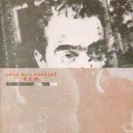
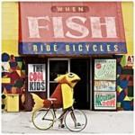
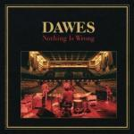
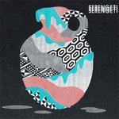
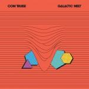
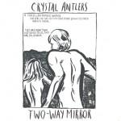
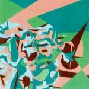

Music Reviews
-

R.E.M. Lifes Rich Pageant (25th Anniversary Edition)
R.E.M. followed up their “not so feel good album” Fables of the Reconstruction with their “feel better” album Lifes Rich Pageant in 1986. The fourth in R.E.M.’s canon to reach the 25th anniversary mark, I.R.S. and Capitol Records have unleashed another reissue unto the public with a poster, photo cards and demos to digest. Oh yeah, and the album.
Sean Caldwell is not Superman... -
Battles Gloss Drop
Battles can't quite keep up the pace they set with Mirrored, but Gloss Drop is still a solid effort.
Joel Stanier reviews... -

The Cool Kids When Fish Ride Bicycles
When Fish Ride Bicycles finally shows its face. Fortunately, The Cool Kids produced an album that’s familiar and safe for summertime, which is exactly what makes the record simultaneously cool and not cool.
Randi Dietiker reviews... -

Dawes Nothing is Wrong
Take a trip to Laurel Canyon this weekend and enjoy the ride.
Alan Shulman reviews... -
They Might Be Giants Join Us
You might know veteran New Yorkers They Might Be Giants as the one-hit wonders behind Birdhouse in Your Soul, or for their music for Malcolm in the Middle, or even their music for children. Join Us, their fifteenth album, promises more of all that, and is, as you'd expect, a difficult offer to refuse.
Mark Davison takes them up on their invitation... -

Serengeti Family & Friends
With help from Why's? Yoni Wolf, the prolific emcee explores life's growing pains through a dichotomy of fantastical and ordinary tales.
Juan Edgardo Rodríguez just tuned in to the darkest of sitcoms... -

Com Truise Galactic Melt
Com Truise makes 1980s inspired electronic music. Artists drawing on the same inspiration are everywhere - can this rise above the rest of it?
Andrew Baer reviews... -

Crystal Antlers Two-Way Mirror
Crystal Antlers are a band this reviewer has always wanted to love, but they've never given me the opportunity. Will Two-Way Mirror change that, or will I continue to dwell in an emotionally vapid music-listener relationship?
Andrew Baer tries to love again for the very first time... -

Remote Islands Days of Heaven
Remote Islands deliver twelve retro-cinematic and melancholy sea shanties with their new album Days of Heaven via the reliable Stunned records.
Pierce Brown reviews... -

Beyoncé 4
Gary McGinley finds 4 to be all gong and no dinner.
Click here to find out why...